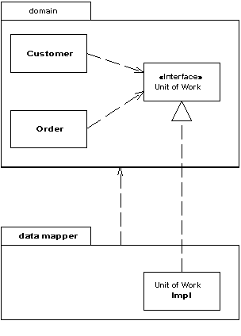

Separated Interface (Выделенный интерфейс)

Паттерн проектирования Separated Interface
Описание Separated Interface
Выделение какого-либо интерфейса к объекту в отдельный от объекта пакет
При разработке какой-либо системы, можно добиться улучшение её архитектуры, уменьшая связанность между её частями. Это можно сделать так - распределив классы по отдельным пакетам и контролировать зависимости этими пакетами. Тогда можно следовать правилам о том, как классы из одного пакета могут обращаться к классам из другого пакета. Например, то, которое запрещает классам с уровня данных обращаться к классам с уровня представления.
Тем не менее, может возникнуть необходимость реализовать методы, которые противоречат основной структуре зависимостей. В таком случае можно использовать Выделенный Интерфейс, чтобы определить какой-либо интерфейс в одном пакете, а реализовать в другом. Таким образом, любой клиент, которому нужна зависимость от этого интерфейса может совершенно не думать о реализации доступа. Паттерн Separated Interface (Выделенный Интерфейс) предоставляет хорошую точку подключения паттерна Gateway (Шлюз)
Примеры реализации
// Separated Interface Pattern in JavaScript
// Interface definition (separated from implementation)
class PaymentProcessor {
processPayment(amount, currency) {
throw new Error('Method must be implemented');
}
}
// Implementation 1: Credit Card Processor
class CreditCardProcessor extends PaymentProcessor {
constructor(apiKey) {
super();
this.apiKey = apiKey;
}
processPayment(amount, currency) {
console.log(`Processing ${amount} ${currency} via Credit Card`);
return { success: true, transactionId: `cc_${Date.now()}` };
}
}
// Implementation 2: PayPal Processor
class PayPalProcessor extends PaymentProcessor {
constructor(clientId, clientSecret) {
super();
this.clientId = clientId;
this.clientSecret = clientSecret;
}
processPayment(amount, currency) {
console.log(`Processing ${amount} ${currency} via PayPal`);
return { success: true, transactionId: `pp_${Date.now()}` };
}
}
// Implementation 3: Bank Transfer Processor
class BankTransferProcessor extends PaymentProcessor {
constructor(bankCode) {
super();
this.bankCode = bankCode;
}
processPayment(amount, currency) {
console.log(`Processing ${amount} ${currency} via Bank Transfer`);
return { success: true, transactionId: `bt_${Date.now()}` };
}
}
// Service that uses the interface
class PaymentService {
constructor(processor) {
this.processor = processor;
}
chargeCustomer(amount, currency) {
return this.processor.processPayment(amount, currency);
}
}
// Usage
const creditCardProcessor = new CreditCardProcessor('cc_api_key');
const paypalProcessor = new PayPalProcessor('pp_client_id', 'pp_secret');
const bankProcessor = new BankTransferProcessor('bank_001');
const paymentService1 = new PaymentService(creditCardProcessor);
const paymentService2 = new PaymentService(paypalProcessor);
const paymentService3 = new PaymentService(bankProcessor);
// All services use the same interface
console.log(paymentService1.chargeCustomer(100, 'USD'));
console.log(paymentService2.chargeCustomer(50, 'EUR'));
console.log(paymentService3.chargeCustomer(200, 'GBP'));<?php
// Separated Interface Pattern in PHP
// Interface definition (separated from implementation)
interface PaymentProcessor {
public function processPayment($amount, $currency);
}
// Implementation 1: Credit Card Processor
class CreditCardProcessor implements PaymentProcessor {
private $apiKey;
public function __construct($apiKey) {
$this->apiKey = $apiKey;
}
public function processPayment($amount, $currency) {
echo "Processing $amount $currency via Credit Card\n";
return ['success' => true, 'transactionId' => 'cc_' . time()];
}
}
// Implementation 2: PayPal Processor
class PayPalProcessor implements PaymentProcessor {
private $clientId;
private $clientSecret;
public function __construct($clientId, $clientSecret) {
$this->clientId = $clientId;
$this->clientSecret = $clientSecret;
}
public function processPayment($amount, $currency) {
echo "Processing $amount $currency via PayPal\n";
return ['success' => true, 'transactionId' => 'pp_' . time()];
}
}
// Implementation 3: Bank Transfer Processor
class BankTransferProcessor implements PaymentProcessor {
private $bankCode;
public function __construct($bankCode) {
$this->bankCode = $bankCode;
}
public function processPayment($amount, $currency) {
echo "Processing $amount $currency via Bank Transfer\n";
return ['success' => true, 'transactionId' => 'bt_' . time()];
}
}
// Service that uses the interface
class PaymentService {
private $processor;
public function __construct(PaymentProcessor $processor) {
$this->processor = $processor;
}
public function chargeCustomer($amount, $currency) {
return $this->processor->processPayment($amount, $currency);
}
}
// Usage
$creditCardProcessor = new CreditCardProcessor('cc_api_key');
$paypalProcessor = new PayPalProcessor('pp_client_id', 'pp_secret');
$bankProcessor = new BankTransferProcessor('bank_001');
$paymentService1 = new PaymentService($creditCardProcessor);
$paymentService2 = new PaymentService($paypalProcessor);
$paymentService3 = new PaymentService($bankProcessor);
// All services use the same interface
$result1 = $paymentService1->chargeCustomer(100, 'USD');
$result2 = $paymentService2->chargeCustomer(50, 'EUR');
$result3 = $paymentService3->chargeCustomer(200, 'GBP');
echo "Result 1: " . json_encode($result1) . "\n";
echo "Result 2: " . json_encode($result2) . "\n";
echo "Result 3: " . json_encode($result3) . "\n";
?>// Separated Interface Pattern in Go
package main
import (
"fmt"
"time"
)
// Interface definition (separated from implementation)
type PaymentProcessor interface {
ProcessPayment(amount float64, currency string) map[string]interface{}
}
// Implementation 1: Credit Card Processor
type CreditCardProcessor struct {
ApiKey string
}
func (ccp CreditCardProcessor) ProcessPayment(amount float64, currency string) map[string]interface{} {
fmt.Printf("Processing %.2f %s via Credit Card\n", amount, currency)
return map[string]interface{}{
"success": true,
"transactionId": fmt.Sprintf("cc_%d", time.Now().Unix()),
}
}
// Implementation 2: PayPal Processor
type PayPalProcessor struct {
ClientId string
ClientSecret string
}
func (ppp PayPalProcessor) ProcessPayment(amount float64, currency string) map[string]interface{} {
fmt.Printf("Processing %.2f %s via PayPal\n", amount, currency)
return map[string]interface{}{
"success": true,
"transactionId": fmt.Sprintf("pp_%d", time.Now().Unix()),
}
}
// Implementation 3: Bank Transfer Processor
type BankTransferProcessor struct {
BankCode string
}
func (btp BankTransferProcessor) ProcessPayment(amount float64, currency string) map[string]interface{} {
fmt.Printf("Processing %.2f %s via Bank Transfer\n", amount, currency)
return map[string]interface{}{
"success": true,
"transactionId": fmt.Sprintf("bt_%d", time.Now().Unix()),
}
}
// Service that uses the interface
type PaymentService struct {
processor PaymentProcessor
}
func NewPaymentService(processor PaymentProcessor) *PaymentService {
return &PaymentService{processor: processor}
}
func (ps *PaymentService) ChargeCustomer(amount float64, currency string) map[string]interface{} {
return ps.processor.ProcessPayment(amount, currency)
}
// Usage
func main() {
creditCardProcessor := CreditCardProcessor{ApiKey: "cc_api_key"}
paypalProcessor := PayPalProcessor{ClientId: "pp_client_id", ClientSecret: "pp_secret"}
bankProcessor := BankTransferProcessor{BankCode: "bank_001"}
paymentService1 := NewPaymentService(creditCardProcessor)
paymentService2 := NewPaymentService(paypalProcessor)
paymentService3 := NewPaymentService(bankProcessor)
// All services use the same interface
result1 := paymentService1.ChargeCustomer(100.0, "USD")
result2 := paymentService2.ChargeCustomer(50.0, "EUR")
result3 := paymentService3.ChargeCustomer(200.0, "GBP")
fmt.Printf("Result 1: %+v\n", result1)
fmt.Printf("Result 2: %+v\n", result2)
fmt.Printf("Result 3: %+v\n", result3)
}Использована иллюстрация с сайта Мартина Фаулера.